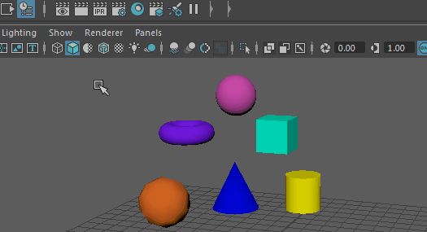

场景中不同对象的名称可以相同，但两个同级节点（具有相同父对象的节点）不能使用相同的名称。
注：
在节点和属性名称中，除下划线 (_) 和井号 (#) 之外，其他所有标点符号都是非法字符。
更改对象或节点的名称
- 执行下列操作之一：
- 在“属性编辑器”(Attribute Editor)顶部选择某个对象或节点，然后编辑其名称。
- 在“大纲视图”(Outliner)中双击某个节点。
- 在“Hypergraph”中的某节点上单击鼠标右键，然后选择“重命名”(Rename)。
同时重命名多个对象
- 选择对象。
- 打开位于“状态行”(Status line)上输入字段旁边的弹出菜单，然后选择“重命名”(Rename)。
- 为所有对象键入基础名称。Maya 会通过为基础名称加上一个递增的数字来重命名对象。

提示： 在“重命名”(Rename)字段中键入值时：
- 按数字键盘上的 Enter 键可以输入值并保持焦点停留在字段中。
- 按键盘上的 Enter 键或 Return 键可输入值并将焦点返回到视图窗口。
为父节点及其所有子节点的名称添加前缀
- 选择父节点，然后选择。
搜索和替换场景中的名称
- 选择。
可以搜索和替换场景中所有节点的名称、选定节点的名称或某个层次中节点的名称。